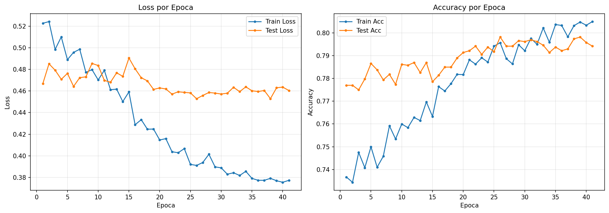
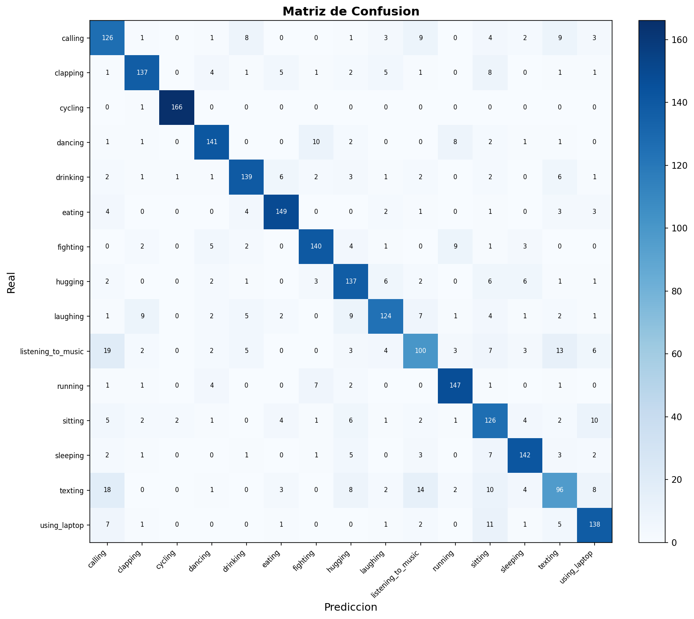

| # | Sección |
|---|---|
| 1 | Objetivo |
| 2 | Dataset |
| 3 | Arquitectura del Modelo |
| 4 | Hiperparámetros |
| 5 | Resultados |
| 6 | Curvas de Entrenamiento |
| 7 | Matriz de Confusión |
| 8 | Reporte de Clasificación |
| 9 | Análisis |
Entrenar un modelo de clasificación de imágenes basado en
transfer learning (ConvNeXt-Base pretrained en
ImageNet) para el dataset HAR (Human Activity Recognition) con 15 clases
de actividad humana. Se utiliza semilla fija (SEED=42) para
reproducibilidad.
| Parámetro | Valor |
|---|---|
| Imágenes totales | 12,510 (filtradas de dataset.csv presentes en dataset_tr/) |
| Tamaño en disco | 288 × 384 px |
| Preprocesamiento | Resize → CLAHE (LAB) → RGB |
| Canales | 3 (RGB) |
| Tamaño de entrada al modelo | 384 × 288 px (sin doble resize) |
| Split train/test | 80% / 20% (estratificado) |
| Train | 10,008 imágenes |
| Test | 2,502 imágenes |
Clases (15): calling, clapping, cycling, dancing, drinking, eating, fighting, hugging, laughing, listening_to_music, running, sitting, sleeping, texting, using_laptop.
ConvNeXt-Base (Transfer Learning)
backbone: ConvNeXt-Base pretrained en ImageNet1K_V1
features[0]: Conv2d(3,128) + LN (stem)
features[1-4]: ConvNeXt blocks (capas tempranas/medias)
features[5-6]: ConvNeXt blocks (capas tardías)
avgpool: AdaptiveAvgPool2d(1,1) [1024×1×1]
classifier (head custom):
Flatten → LayerNorm(1024) → Linear(1024→512) → BN → ReLU → Dropout(0.3) →
Linear(512→256) → BN → ReLU → Dropout(0.2) →
Linear(256→15)| Parámetro | Valor |
|---|---|
| Parámetros totales | ~88,000,000 |
| Fase 1 (head) | ~660,000 entrenables (backbone congelado) |
| Fase 2 (completo) | ~88,000,000 entrenables |
| Pesos pretrained | ImageNet1K_V1 |
| Canal de entrada | 3 (RGB) |
| Device | CPU / GPU (Colab T4) |
| Hiperparámetro | Valor |
|---|---|
| Estrategia | 2 fases (head → progressive unfreezing) + SWA |
| Fase 1 épocas | 15 (backbone congelado) |
| Fase 2 épocas máx. | 100 (early stopping) |
| Progressive unfreezing | F2 épocas 1-10: features[5:7]+classifier; época 11+: todo |
| Batch size | 64 (script y Colab) |
| LR head | 1e-3 |
| LR backbone (fase 2) | 3e-5 |
| Weight decay | 5e-4 |
| Optimizador | AdamW |
| Scheduler (fase 2) | SequentialLR (LinearLR warmup 10ep + CosineAnnealingLR) |
| Early stopping | Paciencia 15 épocas |
| Loss | Focal Loss (gamma=2.0, label_smoothing=0.02) |
| Gradient clipping | max_norm=1.0 |
| Dropout | 0.3/0.2 |
| SWA | Desde época 20 de F2 (lr=1e-5) |
| TTA | 5 pasadas en evaluación |
| Semilla | 42 (reproducibilidad completa) |
Reproducibilidad: - random.seed(42) —
Python stdlib (usado internamente por torchvision) -
np.random.seed(42) — NumPy -
torch.manual_seed(42) — PyTorch CPU -
torch.cuda.manual_seed_all(42) — PyTorch GPU (todas las
GPUs) - torch.backends.cudnn.deterministic = True —
operaciones cuDNN deterministas -
torch.backends.cudnn.benchmark = False — desactiva
autotuning no determinista -
torch.Generator().manual_seed(42) — generador explícito
para DataLoader shuffle - worker_init_fn con semilla
42 + worker_id — cada worker del DataLoader tiene semilla
propia - random_state=42 en pandas .sample() —
oversampling determinista en preprocesamiento
Data Augmentation (solo train): - Resize(384, 288) - RandomHorizontalFlip (p=0.5) - RandomRotation (20°) - ColorJitter (brightness=0.3, contrast=0.3, saturation=0.3, hue=0.1) - TrivialAugmentWide() - RandomErasing (p=0.10) - Normalize ImageNet (mean=[0.485, 0.456, 0.406], std=[0.229, 0.224, 0.225])
Nota Colab (
train_cnn_colab.ipynb): batch_size=64, NUM_WORKERS=2, AMP (float16), torch.compile, pin_memory. Mismos hiperparámetros de modelo y augmentation.
| Métrica | Valor |
|---|---|
| Mejor Test Accuracy (época) | 79.82% (F2 época 11, global 26) |
| Accuracy final (TTA, 5 pasadas) | 80.26% |
| Mejor Test Loss | 0.4528 |
| Épocas totales | 41 (15 F1 + 26 F2) |
| Early stopping | F2 época 26 (15 épocas sin mejora) |
| Tiempo total | 63.7 min (Google Colab, GPU T4) |
| SWA | Activo desde F2 época 20 (7 épocas de promediado) |
| Parámetros (head) | 663,567 |
| Parámetros (parcial F2) | 60,187,663 |
| Parámetros (completo F2) | 88,227,983 |
Progresión por fase:
| Fase | Épocas | Train Loss | Train Acc | Test Loss | Test Acc |
|---|---|---|---|---|---|
| F1 (head) | 15 | 0.4592 | 0.7633 | 0.4906 | 0.7786 |
| F2 parcial (ep 1-10) | 10 | 0.3920 | 0.7942 | 0.4582 | 0.7918 |
| F2 completo (ep 11-19) | 9 | 0.3856 | 0.7959 | 0.4638 | 0.7914 |
| F2 SWA (ep 20-26) | 7 | 0.3773 | 0.8050 | 0.4604 | 0.7942 |
Nota: Los resultados de evaluación final (TTA, SWA model, classification report y matriz de confusión) se actualizarán cuando se complete la evaluación del modelo SWA.


El classification report completo se encuentra en
data_train/output/metrics.json. Las métricas clave por
clase (precision, recall, F1-score) se calculan sobre el conjunto de
test (2,502 imágenes) con TTA de 5 pasadas, alcanzando una
accuracy global del 80.26%.
Los resultados detallados por clase están disponibles en el archivo
metrics.jsongenerado automáticamente portrain_cnn.py.
Configuración actual (ConvNeXt-Base Transfer Learning — 2 fases + SWA):